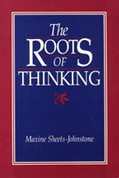

<body bgcolor="#FFFFFF" text="#000000" link="#0000FF" vlink="#CC0000" alink="#CC0000"><center><hr width="350" size="1" align="center" noshade>A ground-breaking interdisciplinary study about conceptual origins linking hominid thinking with hominid evolution<hr width="350" size="1" align="center" noshade><p><a href="https://cdcshoppingcart.uchicago.edu/Cart/ChicagoBook.aspx?ISBN=9780877227113&&PRESS=temple" target="_top">Buy this book!</a> | <a href="https://cdcshoppingcart.uchicago.edu/Cart/Cart.aspx?PRESS=temple" target="_top">View Cart</a> | <a href="https://cdcshoppingcart.uchicago.edu/Cart/Cart.aspx?PRESS=temple" target="_top">Check Out</a></p><p></p></center><!--none//--><h1>The Roots of Thinking</h1>
<h3>Maxine Sheets-Johnstone</h3>
<P>cloth 0-87722-711-X $49.95, Sep 90, <FONT COLOR=#990033>Out of Print</FONT>
<br>paper 0-87722-769-1 $31.95, Sep 90, <FONT COLOR=#990033>Available</FONT>
<br>Electronic Book 1-43990-365-4 $31.95 <FONT COLOR=#990033>Out of Print</FONT>
<BR> 408 pp
</P><BLOCKQUOTE><I>"A significant contribution to the study of early humans, this book is a philosophical anthropology.... it makes genuinely novel, and highly persuasive, claims within the field itself."</I>
<br>&#151<b>David Depew</b><I></I></BLOCKQUOTE>
<p>In this ground-breaking interdisciplinary study about conceptual origins, Maxine Sheets-Johnstone shows that there is an indissoluble bond between hominid thinking and hominid evolution, a bond cemented by the living body. Her thesis is concretely illustrated in eight paleoanthropological case studies ranging from tool-using/tool-making to counting, sexuality, representation, language, death, and cave art. In each case, evidence is brought forward that shows how thinking is modeled on the body-specifically, how concepts are generated by animate form and the tactile-kinesthetic experience.
<p>Later chapters critically examine key theoretical and methodological issues posed by the thesis, Sheets-Johnstone demonstrates in detail how and why a corporeal turn in philosophy and the human sciences can yield insights no less extraordinary than those produced by the linguistic turn. In confronting the currently popular doctrine of cultural relativism and the classic Western metaphysical dualism of mind and body, she shows how pan-cultural invariants of human bodily life have been discounted and how the body itself has not been given its due. By a precise exposition of how a full-scale hermeneutics and a genetic phenomenology may be carried out with respect to conceptual origins, she shows how methodological issues are successfully resolved.
<BR>&nbsp;<h2>Reviews</h2>
<p><I>"Ranging across the humanities and sciences, this thoroughly original book challenges both traditional metaphysics and contemporary cultural relativism. In their place, it persuasively develops a phenomenonological, tactile-kinesthetic account of the origins of thinking. This philosophical anthropology could not be more timely. It replaces the 'linguistic turn' with a promising new 'corporeal turn.'"</I>
<br>&#151<b>John J. Stuhr</b>, University of Oregon
<p><I>"This work takes a much-needed stand in the inter-disciplinary field of philosophical anthropology. Sheets-Johnstone is well-read in the history of philosophy and in contemporary anthropology. The point of view she offers is inventive, insightful, well-established, and fruitful."</I>
<br>&#151<b>Thomas M. Alexander</b>, Southern Illinois University at Carbondale
<BR>&nbsp;<h2>Contents</h2><P>
<p>Acknowledgments
<p><b>Part I: Overview</b>
<br>1. The Thesis, the Method, and Related Matters
<p><b>Part II: Paleoanthropological Case Studies</b>
<br>2. The Hermeneutics of Tool-Making: Corporeal and Topological Concepts
<br>3. On the Origin of Counting: A Re-Thinking of Upright Posture
<br>4. Hominid Bipedality and Primate Sexuality: A Further Re-Thinking of Upright Posture
<br>5. Corporeal Representation
<br>6. On the Origin of Language
<br>7. Hominid Bipedality and Sexual Selection Theory
<br>8. On the Conceptual Origin of Death
<br>9. On the Origin and Significance of Paleolithic Cave Art
<p><b>Part III: Theoretical and Methodological Issues</b>
<br>10. The Thesis and Its Opposition: Cultural Relativism
<br>11. The Thesis and Its Opposition: Institutionalized Metaphysical Dualism
<br>12. The Case for a Philosophical Anthropology
<br>13. Methodology: The Hermeneutical Strand
<br>14. Methodology: The Genetic Phenomenology Strand
<br>15. The Case for Tactile-Kinesthetic Invariants
<p>Name Index
</P><BR>&nbsp;<H2>About the Author(s)</H2>
<P><b>Maxine Sheets-Johnstone</b> is an independent scholar and Courtesy Professor of Philosophy at the University of Oregon.</P>
<BR><H2>Subject Categories</H2>
<p><A HREF="/tempress/philosophy.html" TARGET="_top">Philosophy and Ethics</a>
</p>
<p align="center"><a href="https://cdcshoppingcart.uchicago.edu/Cart/ChicagoBook.aspx?ISBN=9780877227113&&PRESS=temple" target="_top">Buy this book!</a> | <a href="https://cdcshoppingcart.uchicago.edu/Cart/Cart.aspx?PRESS=temple" target="_top">View Cart</a> | <a href="https://cdcshoppingcart.uchicago.edu/Cart/Cart.aspx?PRESS=temple" target="_top">Check Out</a></p><p><font face="Arial" size="1"><a href="copyright.html" onMouseOver="window.status='Web Copyright Policy';return true;" onMouseOut="window.status=''" title="Web Copyright Policy">&copy;</a> 2015 <a href="http://www.temple.edu" target="new" onMouseOver="window.status='Link to Temple University home page';return true;" onMouseOut="window.status=''" title="Link to Temple University home page">Temple University</a>. All Rights Reserved. http://www.temple.edu/tempress/titles/748_reg.html</font></p>